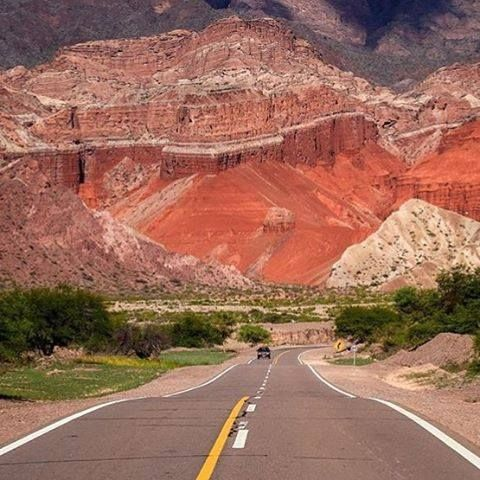
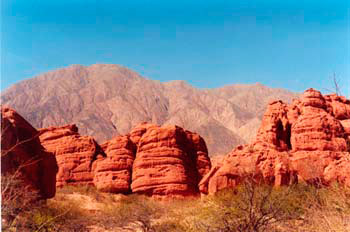
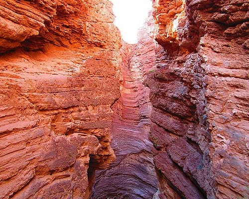
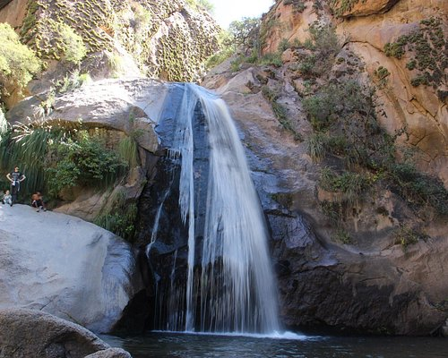
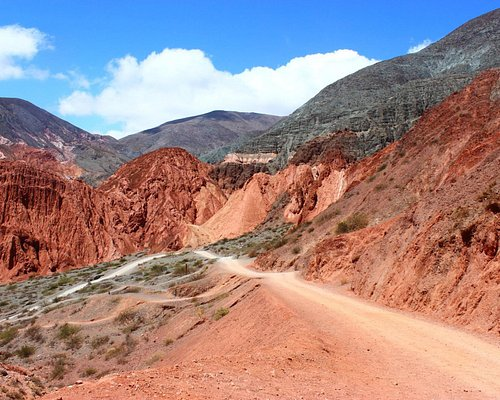
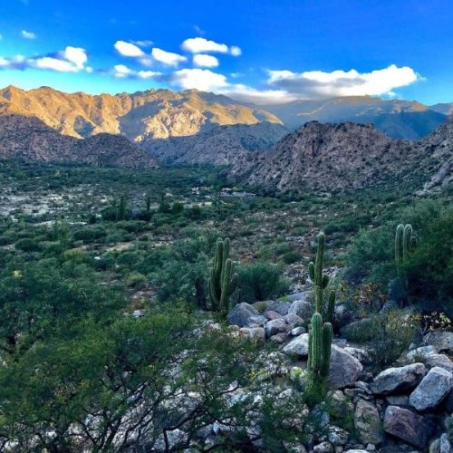
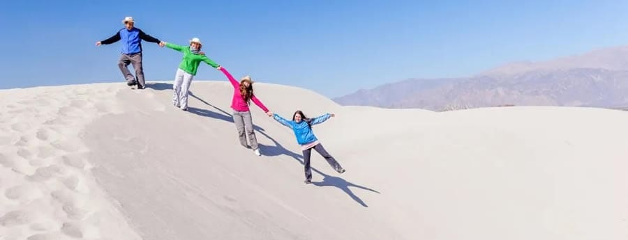
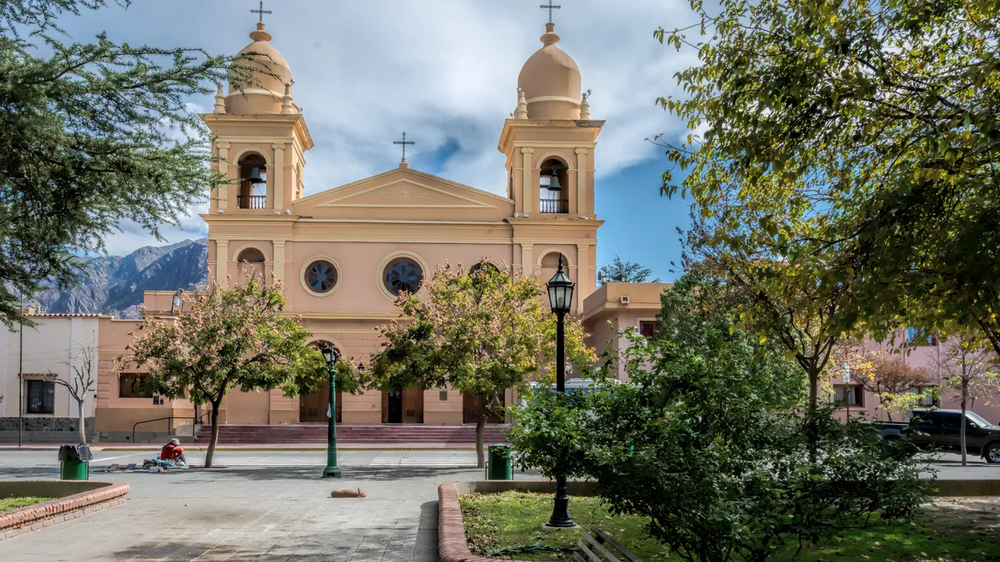
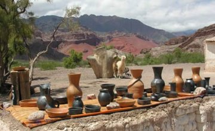
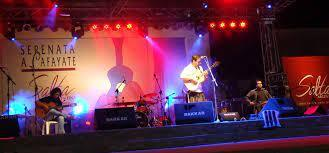

Cafayate

Tierra de montañas , viñedos y folclore.....
Cafayate es un pueblo que tiene todo , para visitar en toda época del año.
En otoño los viñedos se pintan de ocres y rojizos y las temperaturas durante el día son muy agradables al igual que en el invierno.
La primavera lo viste todo de color y los cardones nos regalan sus delicadas flores.
Se encuentre a 189 km de la ciudad de Salta, ubicada exactamente en el corazón de los Valles Calchaquíes
y se destaca por la producción de vinos y por los paisajes que la rodean.
Desde Salta en auto :llegando por la ruta 68, ruta 40 o bien desde Tucumán pasando por Tafí del Valle conectando con la ruta 307 y llegando hasta la 40.
En colectivo: Existen diferentes líneas de ómnibus. Se puede llegar más fácilmente desde Tucumán o Salta. Algunas empresas son Flecha Bus, La Veloz del Norte y Aconquija.
Lugares que no te podés perder de visitar en Cafayate
- Quebrada del Rio Las Conchas
:
También es conocida como la “Quebrada de Cafayate”. Se trata de un espectacular accidente geográfico y es uno de los atractivos turísticos de Salta. Recibe este nombre porque hace millones de años estaba debajo del mar. Las paredes que encajonan el Río de las Conchas fueron erosionadas por el viento durante muchísimos años modelando distintas geoformas
Es un paseo impresionante mientras se recorren las distintas formaciones y los cerros rojizos

- Anfiteatro
Es una formación natural rocosa semicubierta con una acústica perfecta y fascina a aquellos que quieran probar sus cuerdas vocales.

- Cascada del Rio Colorado
Hermoso paseo para refrescarse en sus aguas cristalinas y recorrer senderos entre el verde de los cardonales. Son 9 cascadas que se formaron naturalmente con las aguas del Río Colorado.

- Garganta del Diablo
La Garganta del Diablo es una de las formaciones rocosas mas impresionante de esta ciudad, sus enormes paredones rojizos forman un tubo vertical similar a la boca del diablo en cuyo final se ve el cielo azul de Cafayate. Parada obligatoria para sorprenderse con esta obra de la naturaleza.

- Ruinas del Divisadero
Trekking por las Ruinas del Divisadero a 7 Km. al sudeste de Cafayate se puede transitar por un antiguo asentamiento Diaguita-Calchaquí y apreciar notables vestigios de esta etnia a cielo abierto.
Este circuito se lo puede conocer realizando un trekking de dificultad baja, ideal para conocer la región a la vez que efectuamos ejercicios físicos. Para disfrutar completamente de la experiencia aconsejamos llevar liquido para hidratarse, sombrero o gorro además de protector solar.

- Medanos de Cafayate
Los médanos se encuentran a 18 km del pueblo, por ruta Nº 68 a la salida de la ciudad.
Los médanos de Cafayate se formaron por las arenas del Río Santa María que fueron transportadas por el viento. Son dunas extremadamente altas y escalarlas requieren de tu esfuerzo pero la diversión está garantizada!

- Casco Histórico con su Plaza Central
Sus callecitas coloniales, su plaza renovada, la iglesia, sus casonas antiguas invitan a recorrerlas y contrastan con el movimiento de turistas que llegan día a día a conocer esta ciudad situada en el corazón de Los Valles Calchaquíes.

Sus Viñedos
Sus viñedos merecen un capitulo aparte por su gran variedad y diversidad , la Ruta del Vino consta de unos 200 km a través de los cuales se pueden degustar las cualidades de los “vinos de altura” que son viñedos que están ubicados entre
los 1600 msnm en Cafayate hasta más de 2400 en las cercanías de Molinos, con una altura de 1683 metros sobre el nivel del mar ubicado
en los Valles Calchaquíes.
Cafayate se destaca por la producción de vinos y es mundialmente conocida
por tener la ruta del vino más alta del mundo en donde se destaca la producción de vino torrontés, se encuentra atravesado por la ruta 40, rodeado de viñedos, excelentes vinos
y bodegas en donde se cultiva la uva de tipo Torrontés que es la única variedad autóctona de Argentina .
Salta produce vinos de altura y el denominador común de ellos es el fuerte carácter y las fragancias y coloridos sofisticados.
La visita a sus excelentes viñedos es una actividad imperdible en este hermoso pueblo para disfrutar de
los hermosos paisajes en un ambiente agradable con el placer de un torrontés y de exquisitas desgustaciones.
Ruta del Vino
Ferias , visitas y eventos para agendar ...

Feria de artesanias en sus plazas

Serenata a Cafayate
Para disfrutar un poco de la Serenata ...
Festival de Canto , Alegria y Folclore que se realiza todos los años en el mes de Febrero